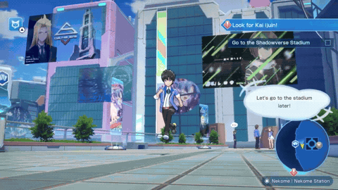
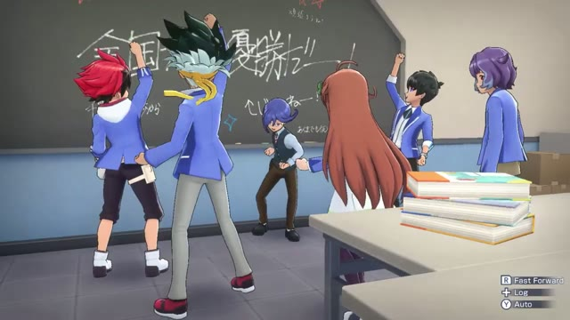
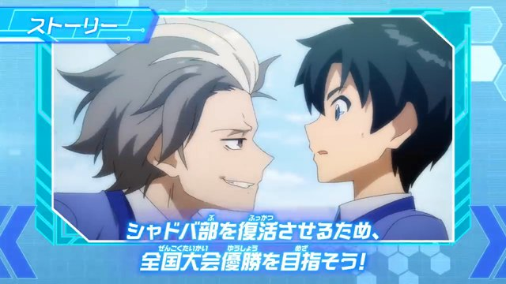

Selected work / 04
Shadowverse: Champion's Battle
Designed and implemented every main and side quest: unlock conditions, NPC spawning, day/night branching and rewards.
- Role
- System Planner
- Team
- Approximately 70 people
- Period
- 2020-01 — 2020-05
- Engine
- Unity / proprietary Cygames engine (inventory; exact engine unconfirmed)
- Tools
- Lua, Confluence, Nintendo Dev Interface, Visual Studio Code, SourceForge, Excel, Word, PowerPoint



Official promotional material illustrates the game; it does not identify individual scene authorship.
Challenge
Every quest had to stay reachable in whatever order the player took it, so unlock conditions, NPC spawning after completion, day/night branching and rewards formed one dependency graph. Each quest also needed its 3D cutscene staged and checked.
What I did
- Designed and implemented all main quests and side quests.
- Built the quest logic: unlock conditions, NPC spawning after completion, day/night branching and reward settings.
- Ensured completability across the entire quest graph.
- Managed NPC placement and spawn conditions against the in-game clock.
- Developed 3D ADV cutscenes and controlled the quality of their direction.
- Debugged quest logic and cutscenes.
Result
Owned the quest system of a Nintendo Switch title end to end, together with the direction of its cutscenes.